Континент
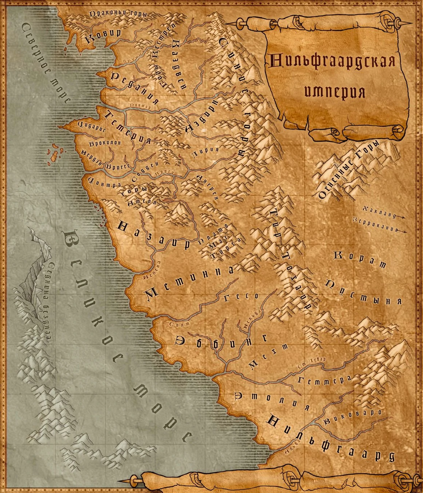Термин, описывающий известную нордлингам часть мира, в который их привела Первая высадка.
Является частью Неверлэнда, а словосочетание мир Континента также часто используется для описания всего мира-планеты, также известного как мир Aen Seidhe.
Термином Континент, на самом деле, принято называть лишь западное побережье реального материка или обширной части суши, где расположены Северные королевства и империя Нильфгаард, на некой планете.
Он занимает территории от Драконьих гор на севере до Города Золотых Башен на реке Альба на юге, и от Великого моря на западе до горных цепей Синих и Огненных гор, и Тир Тохаир на востоке.
За Драконьими горами лежат плохо изученные и мало пригодные для жизни северные территории, где-то на востоке-юго-востоке — государства Хакланд и Зеррикания,
за Великим морем, возможно, на другом континенте или острове, или даже в другой части самого Континента — Офир и Зангвебар.
Что находится к югу от Города Золотых Башен и почему экспансия Нильфгаарда не направлена туда с такой же силой, как на север, неизвестно, возможно, это вызвано некой естественной преградой.
География и фактическое местоположение государств вне западного побережья неизвестны. В юго-восточной части Континента к востоку от гор Тир Тохаир расположена Пустыня Корат.
На Континенте обитали и обитают несколько относительно развитых рас, чьи государства в разные исторические периоды существовали здесь.
Так, на севере Континента располагались государства вранов и эльфов, на юге — государство эльфов-изгнанников, в горных массивах — государства краснолюдов и гномов.
Некоторые расы, например, дриады и нимфы, предпочитали жить в родо-племенном строе.
После прихода на Континент людей, также основавших свои государства к Северу и к югу от Амелл,
все остальные расы кроме научившихся сосуществовать с людьми подгорных карл так или иначе ввиду огромной плодовитости, воинственности и нетерпимости людей начали хиреть и постепенно исчезать, как это произошло с вранами, а их государства — рушиться и пропадать. К середине XIII в. на Континенте сформировались два мощных человеческих блока с незначительным участием нелюдей в государственном строительстве:
Северные королевства, включавшие древнейшие государства, основанные первыми прибывшими на Континент людьми, такие как Цинтра, Темерия и Редания, и остальные появившиеся впоследствии в той же части света менее могущественные и древние Аэдирн, Каэдвен, Лирию и Ривию, Цидарис и т.д., а также небольшие, но развитые государства отрогов Драконьих гор, объединившихся в две коалиции: Ковир и Повисс и Хенгфорскую лигу;
Империя Нильфгаард — огромное, мощное и развитое государство, огнем, мечом и дипломатией объединившее под знаменем коренных нильфгаардцев все страны к югу от цепи Амелл: Назаир, Мехт, Метинну, Гесо, Виковаро и т.д.
Во второй половине XIII в. между этими блоками произошел ряд крупных военных конфликтов, известных как Северные войны, что серьезно изменило расположение сил в северном регионе Континента, например, Цинтра перестала существовать как независимое государство и вошла в состав империи.
Кроме того, в восточной части материка расположены малоизвестные нордлингам и нильфгаардцам Зеррикания и Хакланд, также населенные людьми. Существующие где-то на планете Офир и Зангвебар, возможно, также расположены где-то на континенте. Ряд упоминающихся в литературной саге стран обладают неопределенным местоположением: Страна Барса, Ханну.
Главные персонажи
Геральт из Ривии

Геральт описывается как высокий, худощавый, стройный неестественно бледный не молодой и не старый мужчина с полностью седыми, как молоко, волосами, в книгах перехваченными на лбу кожаной повязкой, в играх же он собирает их в высокий хвост на затылке. Имеет жёлтые фосфоресцирующие глаза с вертикальными зрачками. Маг Пинети в одном из писем Коралл пишет, что у Геральта неухоженные ногти, что неудивительно при таком образе жизни. Йеннифэр описывает его как своеобразно красивого, однако многие другие персонажи Саги говорят, что лицо у Геральта неприятное. Трисс в мыслях описывает лицо ведьмака как измученное, истощённое и иссечённое морщинами, а глаза как всевидящие, больные и видевшие слишком много. В книгах Белый Волк обычно не носит бороду, хотя, тем не менее, не может не иметь короткой несколькодневной щетины на лице, поскольку в странствиях по большаку у него нет возможности и желания бриться ежедневно. В первой и второй частях игр лицо у Геральта гладко выбрито, в третьей части ведьмак может носить бороду, которая растёт в режиме реального времени. Этот факт может прокомментировать Йеннифэр, спросив у Геральта, с чего это вдруг он решил отрастить бороду, а получив невразумительный ответ, чародейка отмечает, что ведьмаку она идёт
Цирилла Фиона Элен Рианнон
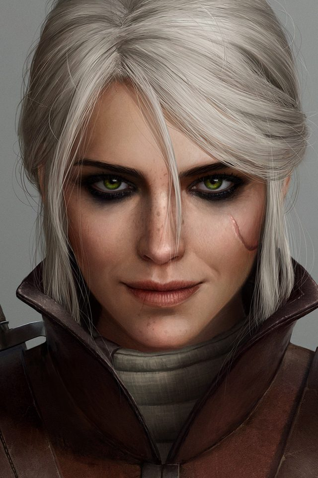Цирилла Фиона Элен Рианнон, более известная как Цири — один из центральных персонажей литературной саги. Дочь цинтрийской принцессы Паветты и князя Дани, внучка Калантэ и Рёгнера из Эббинга, королей Цинтры, дитя Старшей Крови, потомок Лары Доррен аэп Шиадаль и Крегеннана из Леды. С малых лет её няни рассказывают, что она является ребёнком-неожиданностью, предназначенным некому беловолосому ведьмаку. Девочка видит, что эти сплетни весьма не нравятся её бабушке Калантэ, но чем больше она ругает нянь за подобные истории, тем больше укрепляется в маленькой Цири уверенность, что рассказанные ими истории правдивы. Едва девочке исполняется десять лет, с согласия бабушки Цири показывают портрет будущего претендента на её руку из Вердэна. Ей он нравится, и она с благоволения Калантэ отправляется в замок Настрог.
Йеннифэр из Венгерберга

Йеннифэр предстаёт женщиной необыкновенной красоты — красивые фиалковые глаза, роскошные чёрные волосы, закрученные в тугие, ниспадающие на плечи локоны, переливающиеся как перья павлина, стройная фигура. Для подчеркивания привлекательности не гнушается применять магические эликсиры. В книгах Геральт видит её, как на свой манер привлекательную, но далеко не классическую красавицу: немного длинноватый нос, немного узковатые губы, не слишком большая грудь, подбородок, скошенный чуть больше, чем следовало бы, не очень правильные брови. Как и многие чародейки, Йеннифэр наделена весьма непростым, а порой просто невыносимым характером. Одна из второстепенных персонажей, жрица Фрейи Сигрдрифа, описывает ее как женщину мудрую и, в принципе, добрую. Но абсолютно беспринципную, безжалостную и жестокую. В одежде Йеннифэр предпочитает сочетание черного и белого цвета. На шее носит обсидиановую звезду с активными бриллиантами, являющуюся сильным магическим артефактом. Пользуется духами с ароматом сирени и крыжовника
Трисс Меригольд
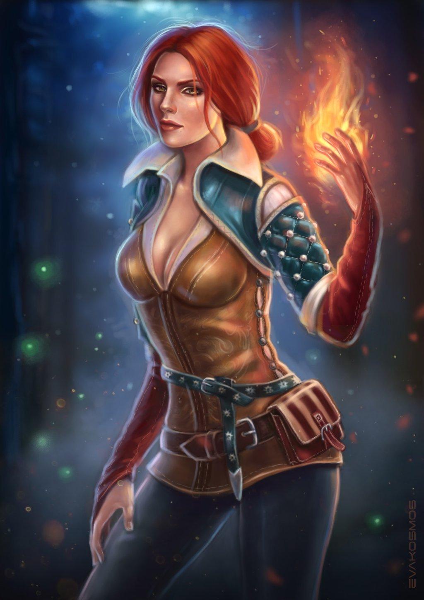Трисс является светлым и мягким персонажем, ей не чужды стеснение, преданность, милосердие, сочувствие и сострадание. Трисс всегда жаждет помочь людям, не отказывает в помощи, также Меригольд очень любит людей и детей. Чародейка испытывает нелюбовь лишь к тем, кто пытается воспользоваться ею или открыто льстит, предпочитая рассказывать правду в глаза. Однако, совесть еще долго может заставлять девушку отводить взгляд от собеседника. С друзьями и близкими Трисс мила и добродушна, всегда позитивна и жизнерадостна. Ей владеет желание добиться мира и добра для всех вокруг, а особенно – для дорогих для нее людей. Девушке иногда ведом страх, наивность и неуверенность, однако ее самоотверженность с лихвой компенсирует это.
Весемир
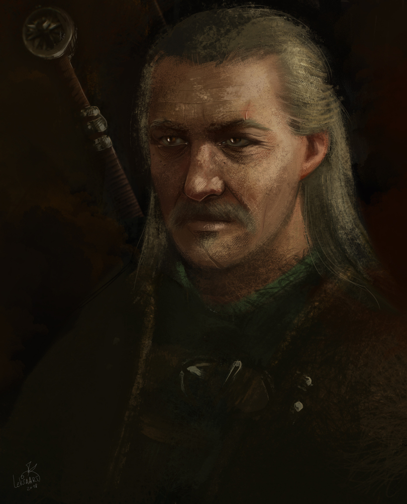Весемир — второстепенный персонаж литературной саги, а также игр Ведьмак и Ведьмак 3: Дикая Охота, старейший, самый опытный и уважаемый ведьмак из Школы Волка, являвшийся её мастером и хранителем традиций Цеха. Являясь одним из немногих ведьмаков, переживших в прошлом нападение на Каэр Морхен, он выступал в роли наставника и практически отца легендарного Геральта из Ривии и ряда других охотников на чудовищ. Обладал широкими познаниями в области фехтования и монстрологии, что, главным образом, и преподавал своим ученикам. На момент действия основных событий литературной саги и игровой серии — середины XIII века — Весемир находится уже в довольно преклонном возрасте. Он имеет довольно плотное телосложение, длинные, зачёсанные назад поседевшие волосы, а также носит усы. На умудрённом годами лице мастера имеется небольшой вертикальный шрам, пересекающий левую бровь. Весемир одет в лёгкий кожаный жилет поверх льняной рубахи с закатанными рукавами, тёмные штаны с кожаными наколенниками и сапоги с заклёпками. В молодости отличительной чертой внешнего вида Весемира была тёмная шляпа с широкими полями, очень модная на то время — её ведьмак носил для того, чтобы скрывать свои изменённые мутацией глаза. Свой любимый головной убор он носил на постоянной основе и практически с ним не расставался, носив вместе со свободным плащом во время своих многочисленных приключений
↑↑↑↑↑↑↑↑↑↑( Наверх )↑↑↑↑↑↑↑↑↑↑Фракции
Темерия
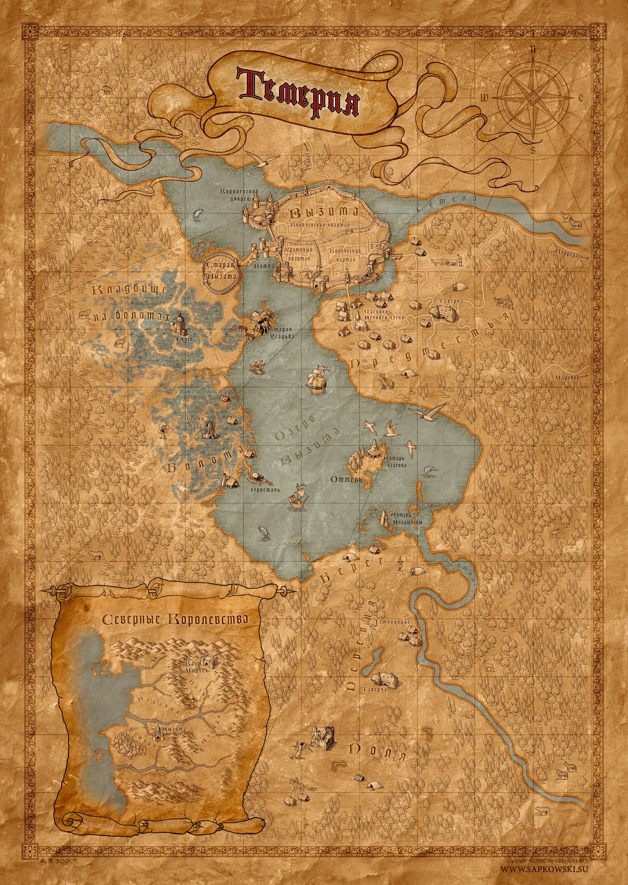Темерия — некогда одно из самых крупных и могущественных королевств Севера, имевшее важное значение как стратегическое, так и политическое. Ныне же, Темерия представляет из себя жалкие остатки былого величия самой себя. Теперь это всеволишь вассальное государство, в котором оставшаяся темерская знать и королева Анаис (нынешняя владычица Темерии) находятся в подчинении у реданской короны. За рекой Понтар Темерия граничит с Реданией. С юга и востока королевство окружают горные цепи, включая и Махакам, оплот краснолюдов и гномов. За этими горами лежат Лирия и Ривия и Аэдирн. Столицей Темерии является ныне полуразрушенная Вызима, расположенная у одноименного озера. Официальными религиями королевства являются культ богини Мелитэле и вера в Вечный Огонь. В Темерии так же находилась обитель и несколько командорств Ордена Пылающей Розы. Основная валюта Темерии — темерский орен. Один орен равняется 100 грошам. Однако теперь, орен даже не стоит и ломанного гроша.
Темерию населяют не только люди, но и краснолюды, эльфы, гномы и дриады. После опустошительной войны с Нильфгаардом во многих районах королевства объявились всякого рода чудовища, которые до этого никогда серьезной опасности не представляли. Дороги же стали небезопасны из-за огромного количества бандитов и разбойников. В прошлом это могучее королевство приобрело еще более значительное влияние благодаря правлению Его Величества короля Фольтеста. Впрочем, это не значило, что темерцы живут с другими королевствами припеваючи — из-за маленького кусочка земли, известного как Долина Понтара, темерцы веками грызлись с Каэдвеном, Аэдирном и Реданией.
Под протекторатом Темерии находилось много земель, по количеству вассальных государств темерцы занимали второе место в мире после Нильфгаарда. Самые крупные из них — Махакам, Бругге, Ангрен, Содден и Элландер. Темерии принадлежит ныне опусташённый реданскими войсками остров Танедд, на котором раньше была расположена школа начинающих чародеек — Аретуза.
Империя Нильфгаард
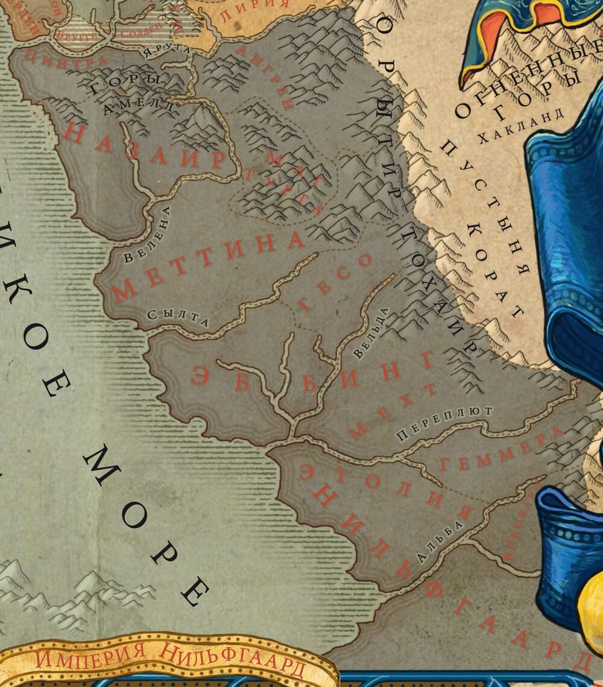Империя Нильфгаард — одно из самых больших и могущественных государств в истории мира, находящееся в южной части Континента. Может похвастаться процветающей экономикой и мощной, хорошо подготовленной армией, которой руководят талантливые командиры. Жителей Империи за её пределами именуют нильфгаардцами (или нильфами) или Чёрными, однако внутри Империи нильфгаардцами обычно называют лишь жителей исторического ядра государства. Империя долгие годы расширялась посредством завоеваний. Покорённые земли превращались в провинции, управляемые из центра, или же в вассальные государства, власть в которых номинально сохранялась за прежними правителями. Последнее происходило в случае, если местный король без сопротивления сдавался Нильфгаарду (например, так произошло в Метинне и Туссенте). Ко времени правления императора Эмгыра вар Эмрейса границы Империи вплотную приблизились к Яруге.
Острова Скеллиге
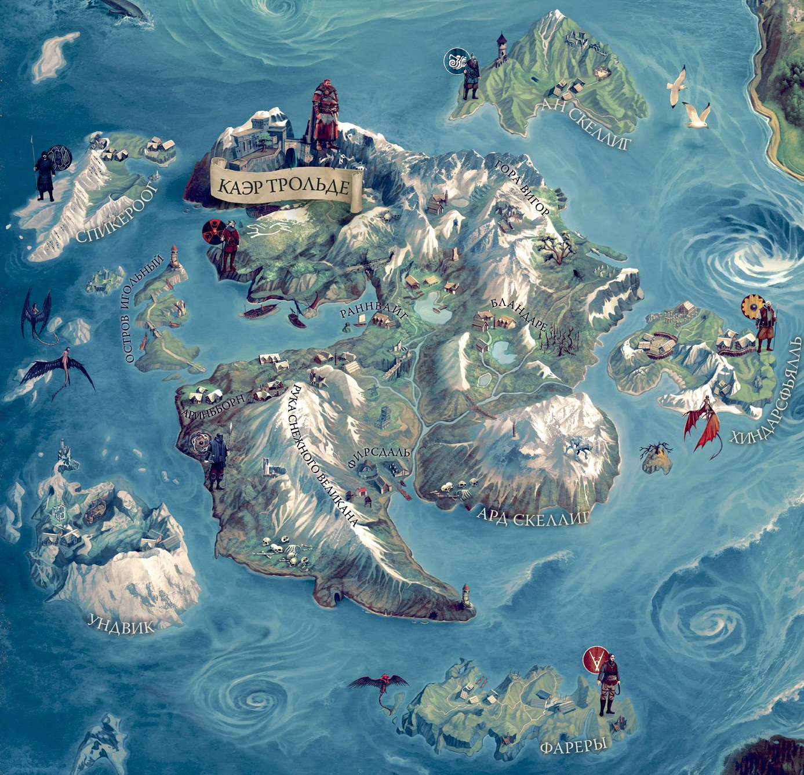Острова Скеллиге, или просто Скеллиге — государство, расположенное на одноимённом архипелаге. Эти места окутывают древние легенды. Обитатели Скеллиге известны как грозные пираты и располагают сильным флотом — возможно, наилучшим среди всех Северных королевств.Горный архипелаг расположен недалеко от побережья Цинтры, их разделяет Бездна Седнина. Архипелаг состоит из двадцати островов, самый крупный из которых зовётся Ард Скеллиг. На нём расположена столица королевства — Каэр Трольде. Остров Ан Скеллиг отделён от большего собрата проливом и расположен на севере-востоке от Ард Скеллиге. Территория меньшего острова на севере имеет многочисленные фьорды, переходящие на юге в обширную равнину Спикероог, расположенный западнее широкого пролива, славится своими многочисленными горными хребтами, уходящими вершинами высоко в небо. Остров Ундвик, расположенный к западу от Ард Скеллиге, на своих скалистых утёсах приютил множество морских птиц. Также на нём, до прибытия Геральта, обитал грозный ледяной великан. Если смотреть дальше на восток, то можно заметить самый маленький остров архипелага — остров Хиндарсфьялл. Там находится священная роща Фрейи. Самый южный остров носит имя Фаро, который славится своими пиратами-работорговцами. Со всех сторон окружённое морями королевство островов Скеллиге имеет довольно холодный и сырой климат. Погода на территории архипелага быстро меняет своё состояние и изобилует как дождями, так и порывистыми ветрами.
↑↑↑↑↑↑↑↑↑↑( Наверх )↑↑↑↑↑↑↑↑↑↑Мир Ведьмака и его жители
Список существ, населяющих материк:
- Самые первые жители материка - Скоятаэли. Скоя’таэли, или Белки — партизанское движение нелюдей, сформировавшееся после окончания Первой Северной войны. Люди считают их террористами. Своё название получили за обыкновение носить на шапках беличьи хвосты.
- 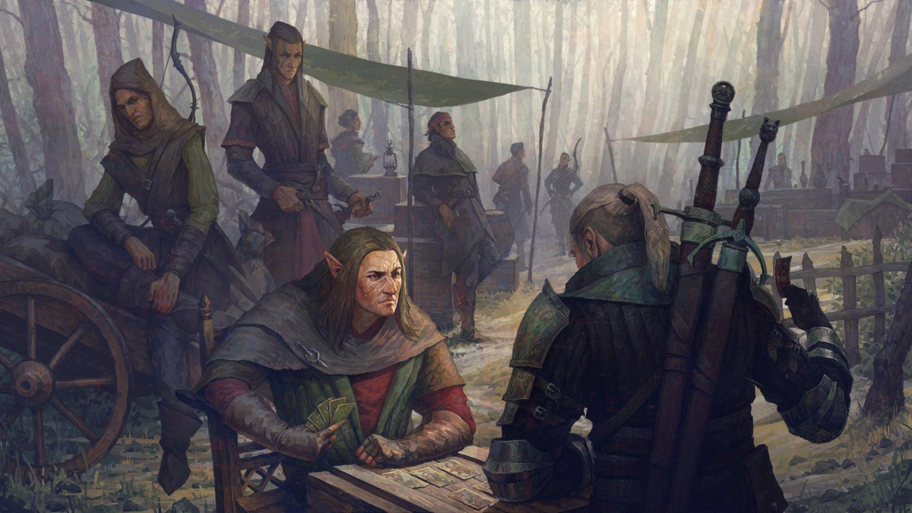
- Краснолюды в основном, воины, ремесленники и купцы. Являются долгожителями, как и эльфы, однако среди них плодовита только «молодёжь»
- 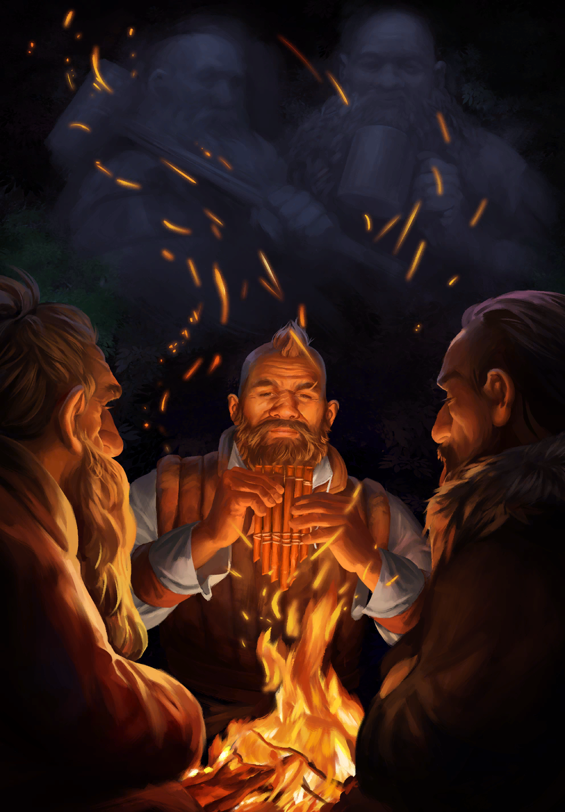
- Люди — самая молодая и наиболее многочисленная раса на континенте, составляющая большую часть населения Северных Королевств и Нильфгаардской Империи.
После прибытия на континент люди начали агрессивную экспансию, завоевывая населенные старшими расами земли. В результате они стали доминирующей расой, тогда как эльфы, краснолюды и другие стали называться нелюдями.
- 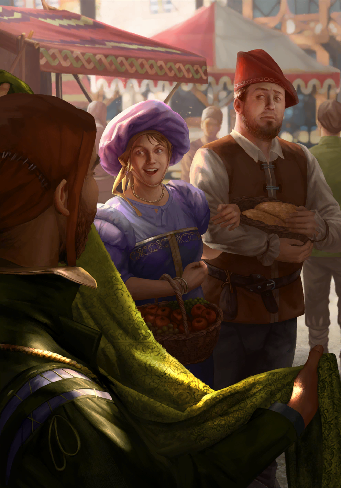
- История о том, как мир «Ведьмака» населило такое ужасающее, но и ужасно интригующее скопище разномастных монстров, сама по себе любопытна. За примерно полторы тысячи лет до происходящих событий разразился глобальный катаклизм — Сопряжение Сфер, сдвинувшее границы миров и открывшее путь целому сонму чужеземных тварей. Если верить книге «Сопряжение Сфер» из первой части игровой серии, эльфы считают, что люди тоже входили в число пришлых тварей. Сами люди не очень склонны признавать за правду, но соглашаются, что именно в ту пору человечество поставило магию себе на службу.
Чудовища плодились на новом месте не так активно, как кролики или люди, но причиняли последним изрядно боли и страданий. В конце концов, чтобы держать гадов под хоть каким-нибудь контролем, появилась каста борцов с нечистью — мутантов, прозванных ведьмаками.
- 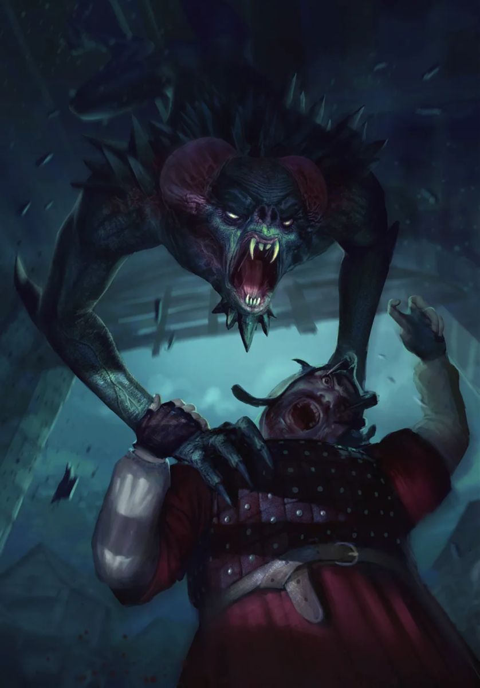
- Ведьмаки, также известные как ведьмачи, ведьмины — собирательное название для группы искусственно созданных мутантов, прошедших специальную подготовку и обладающих сверхъестественными способностями и возможностями, чьё изначальное предназначение — истреблять чудовищ.
- 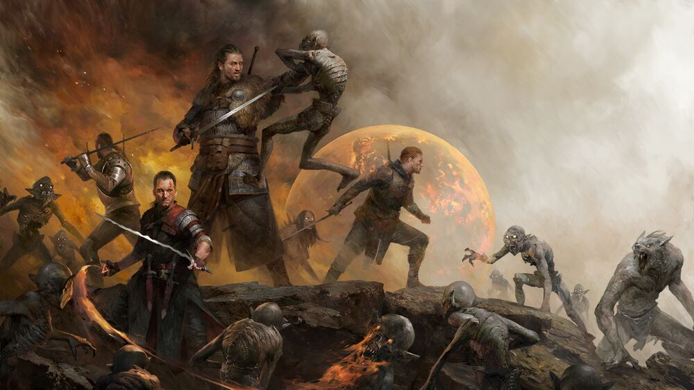
Киноадаптация вселенной

Сериал рассказывает предысторию Йеннифэр, отсутствующую в книгах: этот персонаж изображён как горбунья, оказавшаяся на обучении в чародейской школе в Аретузе и изменившая свою внешность благодаря чарам. Параллельно разворачивается сюжетная линия Цириллы, спасающейся после взятия Цинтры армией Нильфгаарда.О начале работы над первым сезоном «Ведьмака» стало известно в мае 2017 года. Проектом занялись компании Sean Daniel Company и Platige Image. В декабре 2017 года шоураннером проекта стала Лорен Шмидт Хиссрих. К январю 2018 года был завершён сценарий пилотного эпизода, в апреле стало известно, что первый сезон будет состоять из восьми серий и что съёмки будут проходить в Центральной Европе. Съёмки начались в Венгрии 31 октября 2018 года, официально закончились 30 мая 2019 года.
В открытом доступе все восемь серий первого сезона оказались 20 декабря 2019 года.Создатели сериала были заранее так уверены в его успехе, что ещё до премьеры запланировали съёмки второго сезона. На сайте-агрегаторе кинооценок Rotten Tomatoes рейтинг первого сезона составляет 66 % на основе 80 обзоров. В положительных рецензиях фигурируют атмосфера сериала, боевые сцены, игра Генри Кавилла. В противовес этому журналист Даррен Фрэнич из Entertainment Weekly поставил сезону самую низкую оценку, заявив, что «его предназначение — никогда больше не смотреть эту скукотень». При этом критик признался, что посмотрел полчаса первого эпизода и перешёл сразу к пятому, чем вызвал негативную реакцию со стороны зрителей[